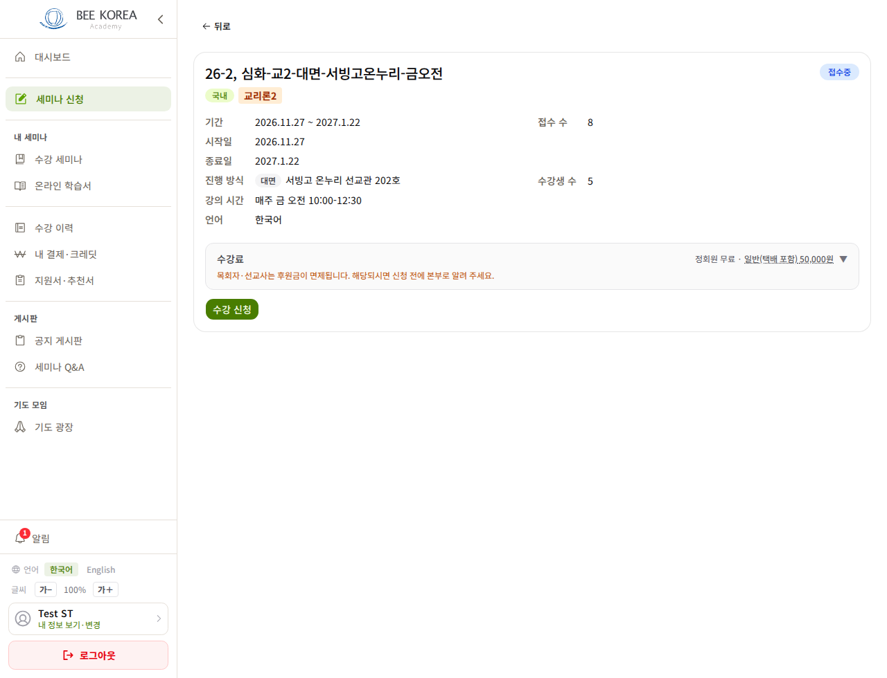
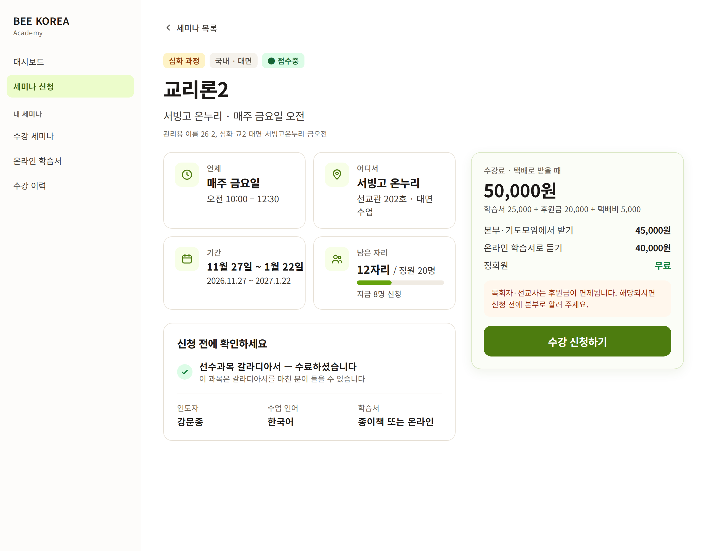
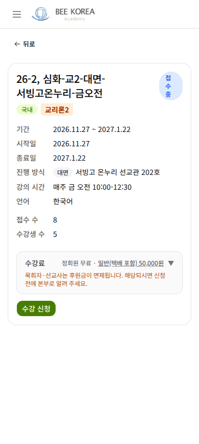
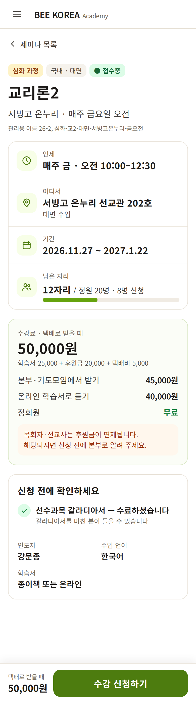

LMS 세미나 상세 — 디자인 시안 1차
2026-10-11 · 학생이 「수강 신청」을 누르는 화면 · 실제 데이터(교리론2, 서빙고 금 오전)로 그렸습니다 · 아직 적용 전
무엇이 바뀌나
- 제목 = 과목 이름 — 관리용 이름(26-2, 심화-교2-…)은 아래에 작게
- 핵심 4칸 — 언제 · 어디서 · 기간 · 남은 자리. 이름표는 작고 흐리게, 값은 크고 굵게 → 「자세히 봐야 구분되던」 나열을 없앰
- 수강료를 펼쳐 둠 — 받는 방법별 금액과 무엇이 합쳐진 값인지 한눈에 (지금은 눌러야 보임)
- 신청 버튼을 크게 — PC 는 오른쪽 상자, 휴대폰은 화면 아래에 늘 붙어 있음
- 중복 정리 — 기간·시작일·종료일 3줄 → 1칸, 「접수 수·수강생 수」 → 「남은 자리」
PC


휴대폰


정해 주실 것
- 인도자 이름을 학생에게도 보여줄까요? 지금은 관리자 화면에만 있습니다.
- 「남은 자리」를 무엇으로 셀까요? 시안은 신청 8명 기준(정원 20 − 8 = 12자리)입니다. 수강 확정 5명 기준이 맞으면 15자리가 됩니다.
- 휴대폰 신청 버튼을 화면 아래에 고정해도 될까요? 스크롤해도 늘 보입니다.
확정되면 같은 「핵심 4칸」을 세미나 목록에, 「요약 카드 + 묶음」 방식을 회원 상세에 이어서 적용합니다.